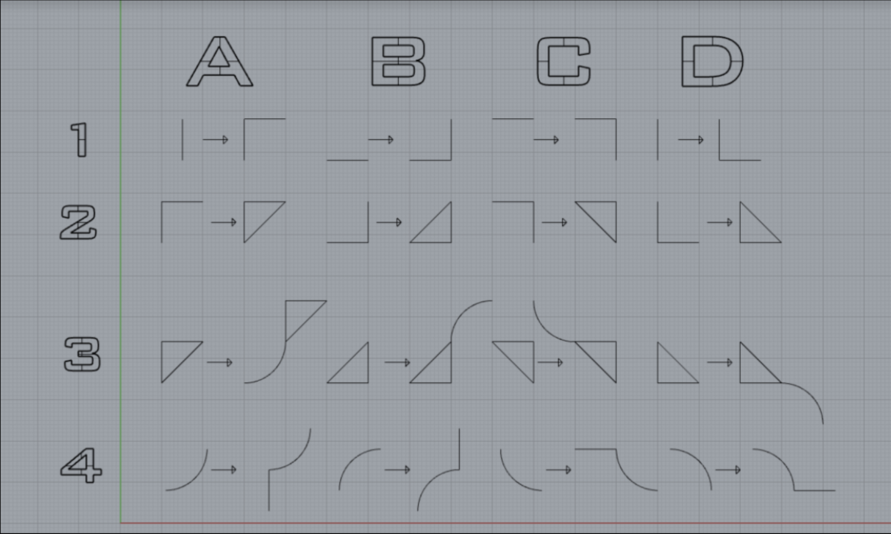
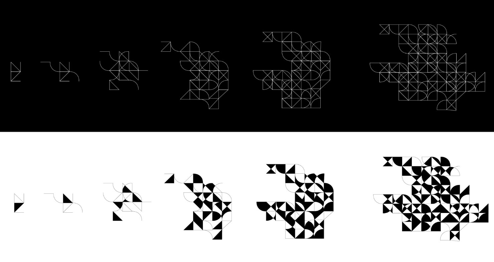
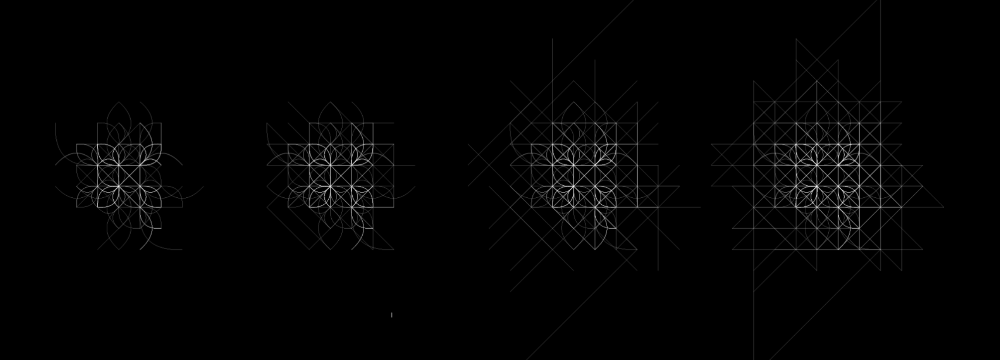
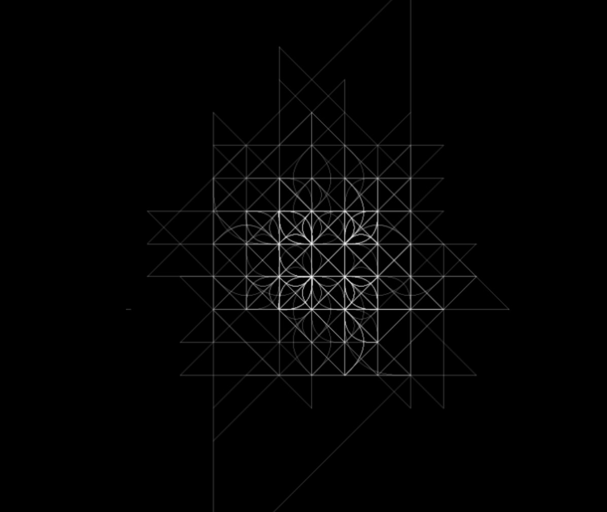
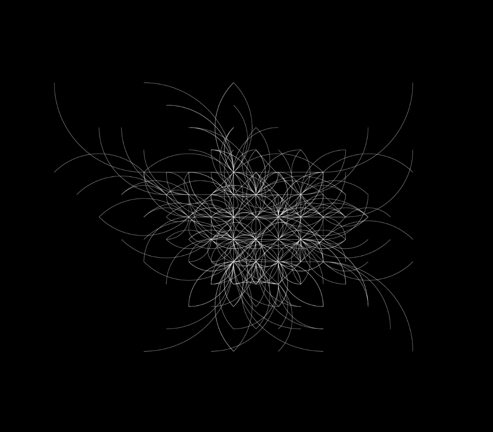
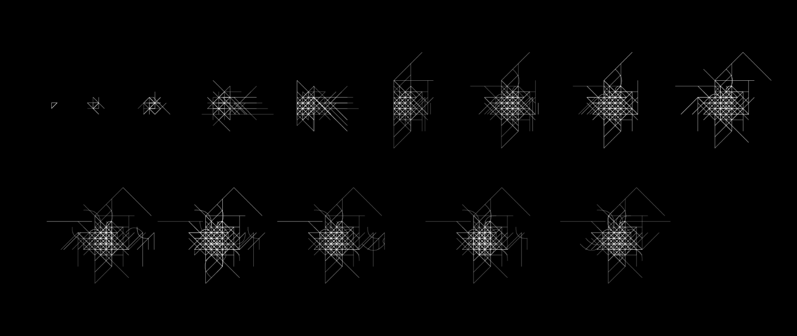
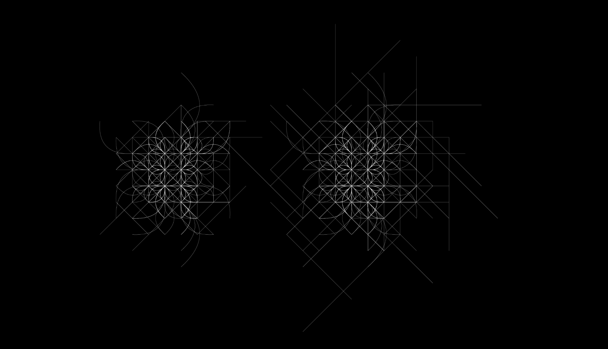
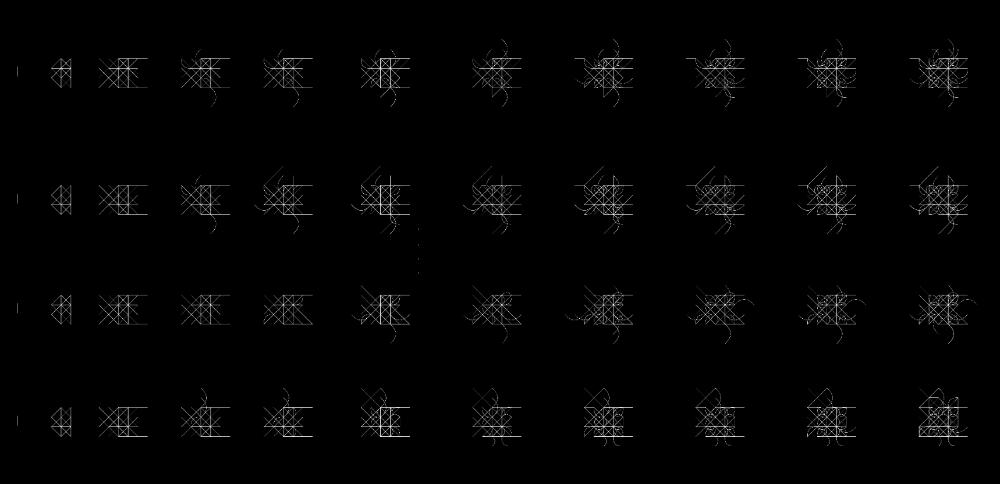

My friend David Troetschel generated this ruleset as an exploration of shape grammar.
I was really interested in this ruleset, and decided to try to see what patterns will be generated following the rules. If you don't know what shape grammar is, it is "a system of rewriting shape rules". Check out Professor Krishnamurti's intro !
I decided to first trace through the rules myself, and see what patterns I will be able to create from these rules. During each step, I decided to follow my own intuition and aesthetic to decide what's the 'best' rule to apply. Applying these rules step by step, interesting patterns start to emerge. They have a really nice quality of modularity, so I decided to color them in black and white. And I love the results! Their modularity and repetition in pattern reminds of mosaic tiles.
The patterns generated had my personal preference, so in order to grasp what the rules sets would result in completely randomly, I decided to use programming to randomly generate patterns following the rules.
 These patterns, generated by randomly by computer, were very different from the ones I drew. They are more organic and less modular. By applying the rules on different scales, there's a lot more hierachy in the pattern. I made the lines translucent so that the pattern would be the brightest at points where the lines overlap. And here are some more pattenrs!
   